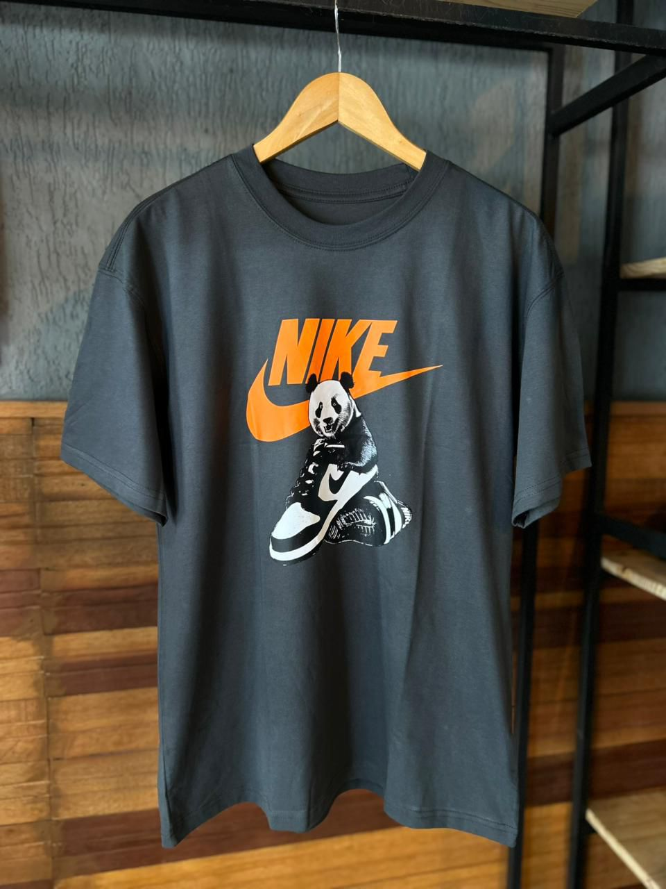

Exemplo de textos
Este texto usa a cor primária vinda do mapa de cores (@colors[primary]).
Este texto usa a cor secundária vinda do mapa de cores (@colors[secondary]).
Conversão de estilos para LESS usando variáveis, mapas e funções.
Este texto usa a cor primária vinda do mapa de cores (@colors[primary]).
Este texto usa a cor secundária vinda do mapa de cores (@colors[secondary]).
